Prologo · 1987
Si alza il sipario
L'associazione “CIPorti a teatro?” nasce ufficialmente nel marzo 2026, come naturale evoluzione di una lunga e significativa esperienza nel mondo del teatro amatoriale, iniziata nel lontano 1987.
Dietro le quinte
Una storia che viene da lontano: quasi quarant'anni di teatro amatoriale a Caselle in Pittari, dal 1987 a oggi.
Prologo · 1987
L'associazione “CIPorti a teatro?” nasce ufficialmente nel marzo 2026, come naturale evoluzione di una lunga e significativa esperienza nel mondo del teatro amatoriale, iniziata nel lontano 1987.
Atto I · Rassegne e concorsi
Un percorso di passione, dedizione e impegno che, per quasi quarant'anni, ha visto i suoi protagonisti partecipare a numerose rassegne e concorsi teatrali in Campania e in diverse regioni d'Italia, conseguendo importanti riconoscimenti e premi per la qualità delle rappresentazioni, la cura dei lavori portati in scena e la costante abnegazione dimostrata nel corso degli anni.
Atto II · Amici del Teatro
Questa lunga esperienza si è sviluppata sotto il nome della precedente associazione “Amici del Teatro”, attraverso la quale sono state realizzate numerose attività artistiche e culturali, nonché progetti di laboratori teatrali all'interno delle scuole.
Atto III · Nelle scuole
Proprio queste iniziative hanno suscitato un crescente interesse da parte degli istituti scolastici del comprensorio del Golfo di Policastro, favorendo la diffusione della cultura teatrale tra le giovani generazioni.
Un'esperienza particolarmente significativa è stata la realizzazione, presso l'Istituto Comprensivo di Caselle in Pittari, di un progetto permanente denominato “Teatro Scuola”, volto a promuovere il teatro come strumento educativo, espressivo e formativo.
Atto IV · In paese
Parallelamente, l'attività dell'associazione ha contribuito a sensibilizzare l'intera comunità locale nei confronti dell'arte e, in particolare, del teatro, inteso non soltanto come forma di spettacolo, ma anche come occasione di aggregazione, crescita culturale, valorizzazione delle tradizioni e condivisione.
Atto V · Le tradizioni
Nel corso degli anni sono stati realizzati spettacoli di diverso genere, affrontando testi e tematiche differenti, senza trascurare il prezioso patrimonio linguistico e culturale locale.
Particolare attenzione è stata infatti dedicata al teatro in vernacolo casellese, attraverso la rappresentazione delle opere scritte dal Prof. Dino Marsicano e portate in scena con passione e sensibilità dall'insegnante Ines Stella, da sempre profondamente legata al mondo teatrale.
Oggi · Marzo 2026
Oggi, con la nascita di “CIPorti a teatro?”, questa importante eredità artistica e culturale trova una nuova identità e nuovi stimoli per proseguire il proprio cammino.
L'obiettivo è continuare a promuovere e diffondere la cultura teatrale, coinvolgere nuove generazioni, valorizzare le tradizioni del territorio e creare occasioni di incontro e partecipazione attraverso il linguaggio universale del teatro.

Una storia che viene da lontano, una passione che continua e un nuovo progetto che guarda al futuro, con la consapevolezza che il teatro non è soltanto qualcosa da vedere, ma soprattutto qualcosa da vivere e condividere.